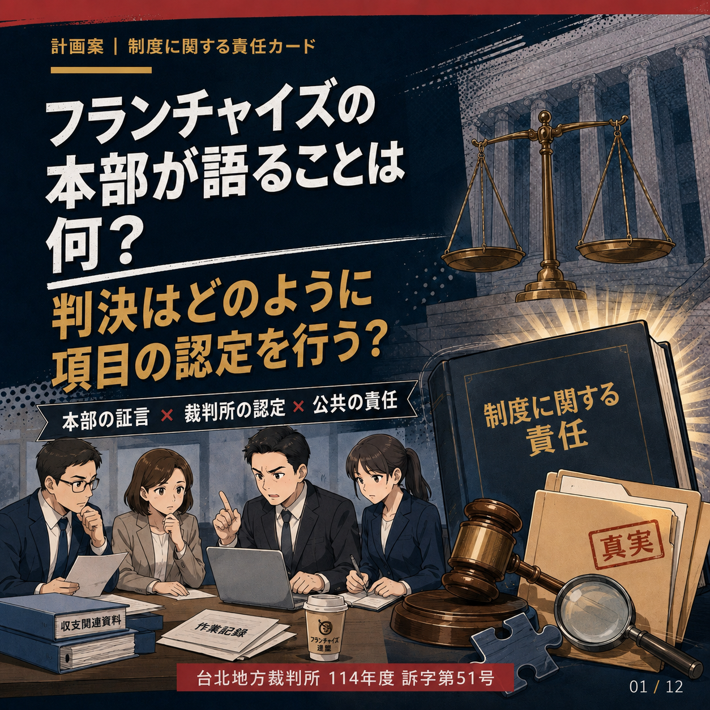

⚖ 法廷がまもなく始まります
⚖ 法廷がまもなく始まります
最近の注目点
季事事件｜陳尚潔さんの第二回公判が間もなく始まる
児童福祉同盟のソーシャルワーカー、陳尚潔さんの不法死亡事件が二審に入った。法廷は台北市中正区博愛路127号14号法廷で開かれる。
日付9月16日（水）
時間14:30
法廷法廷十四
事件紹介を見る →
傍聴記録更新予定
法廷記録や事件追跡から公的擁護に至るまで、重要なことを可視化します。 また、すべての子供の安全を真に最優先することができます。
裁判情報、事件報告、活動記録、判決経過、制度上の取り組みをバナーメニューに整理し、動画を選択するように素早くページにアクセスできます。
⚖ 法廷がまもなく始まります
児童福祉同盟のソーシャルワーカー、陳尚潔さんの不法死亡事件が二審に入った。法廷は台北市中正区博愛路127号14号法廷で開かれる。
最新の裁判日程と裁判手続きが一目でわかります。
重要事件、制度課題、特定企画を短時間で把握できます。
 事件速報
事件速報二組の訪問日と記録日の食い違い。起訴後の第一審手続にあり、公表判決はまだありません。
助けを求めるサインは、傷だけでなく、沈黙や言葉、日常にも表れます。繰り返す兆候に気づき、保護を始めるための特集です。

法廷漫画新刊三名の管理職の証言と一審判決を対照し、管理、監督、確認、追跡、通告の責任を整理します。
 特別企画
特別企画台湾の民間伝承と現代の司法記録を対照し、まだ救えた時になぜ扉が開かなかったのかを問い直す。
 第三審で判決確定
第三審で判決確定劉彩萱氏には無期懲役、劉若琳氏には懲役18年の判決が下された。
 二番目の例では
二番目の例では彼は過失死の最初の裁判で有罪判決を受けた。偽造に対する量刑と無罪の両方が控訴審に入った。
 裁判中
裁判中保育現場における危険性についての警告は、学校教育よりずっと前から行われてきました。
 二番目の例では
二番目の例では一審ではまだ死刑が確定しておらず、二審では殺意と量刑の問題が引き続き審理される。
街頭での権利擁護、連帯、国民の参加を記録したもの。
ステータス カードを使用して、現在の司法段階をすばやく特定します。
個別のケースの警告からシステム設計まで、次の子供を早く見させましょう。
第三審で判決確定控訴保留中第一審手続裁判中二番目の例では 二番目の例では
二番目の例では

ニュースの中だけに存在するべきではない名前もあります。
聴くたび、録音するたび、街頭に出るたびに、子供たちが受けた被害が時が経っても忘れられないことを願います。
私たちは、悲しみに留まらず、次の子供が間に合うように会い、十分に保護されることを願って、子供たちの事件、監督システム、裁判手続きの記録に引き続き注意を払い続けます。
無視された害を目に見えるようにし、システムが実際に子供たちを捕まえるようにしましょう。
2026 年 8 月まで。すべての数字は、実際に参加し、記録し、サポートし、同行したボランティア パートナーが残した足跡です。
裁判手続きや重要な法廷審理を継続的に記録し、長期にわたる裁判を通じて事件に同行します。
子どもの安全、被害者支援、制度的擁護を公共の場に持ち込む。
注意を言葉だけに留めるのではなく、具体的な付き合いや支援に変えていきましょう。
事件裁判の進行状況、重要な審理および司法手続きを記録します。
公開裁判期日、判決、検証可能な情報をまとめます。
散在する情報をわかりやすく整理し、児童保護制度の導入を促進します。
家族の声を尊重し、長い司法の旅路での努力を見てもらいましょう。
4 つのボランティアのアイデンティティは、「守護者、家族、光、前進」という共通の視覚的語彙を継承しており、さまざまな活動や取り組みの状況に応じて柔軟に使用できます。
上記は、ブランドと取り組みを視覚的に解釈するために使用される芸術的なイメージの説明であり、法律、政策、または個別の事件の事実の決定を表すものではありません。
お子様の安全と最善の利益を最優先に考えてください。
制度の見直し・改革を推進し、児童保護ネットワークを強化する。
市民の力を結集して、より安全な社会を築きましょう。
引き続き注目し、すべての子どもたちの未来を守るための行動を続けてください。


公式コミュニティ
Facebook、Instagram、Threads は独立した公式コミュニティ ページとして編成されており、各プラットフォームのアート カードからフォローできます。